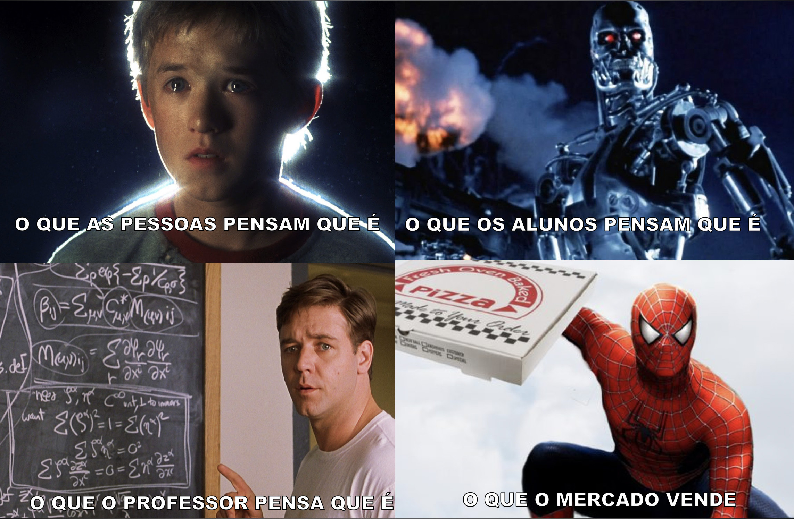
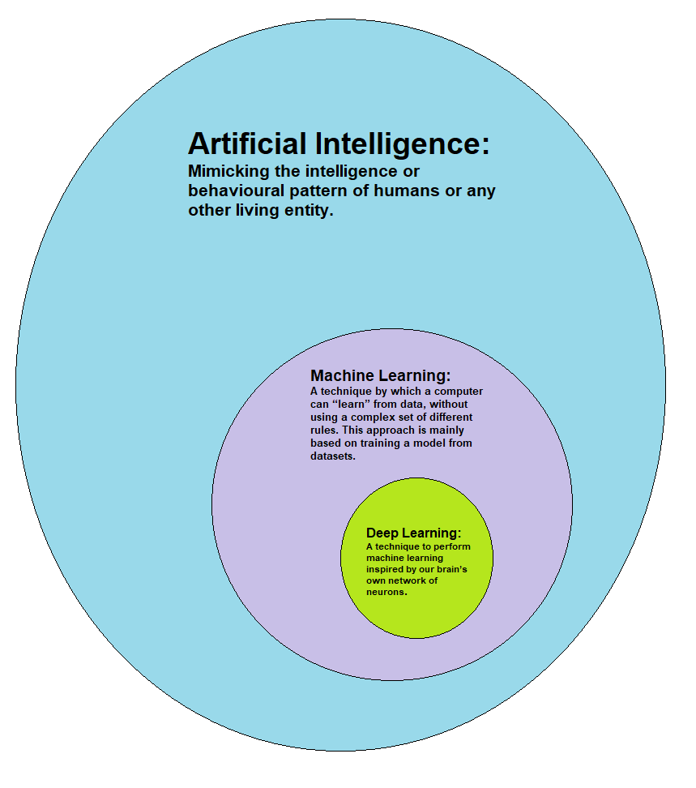

Inteligência Artificial, Aprendizado de Máquina e Além...
Dr. Humberto Sandmann
ESPM | Insper | RockSpoon | SelsanTech
2019.05.15 - UFScar :: Araras : Fisicando 7
O que é?
Revoluções
- 1790 - 1840: Revolução Industrial
- 1936 - hoje: Revolução dos Serviços?
Automatização dos serviços
> O que pode ser automatizado?
Por que está Hype?
ImageNet- até 2012: 26%
- 2012: 15% - AlexNet (Rede convolutiva - DL)
- 2013: 11.2% - ZF Net
- 2014: 7.3% - VGG Net
- 2015: 6.7% - GoogLe Net
- 2015: 3.6% - Microsoft ResNet (~5% humanos)
- hoje: ~2.7%
Por que está Hype?
- 1997: Deep Blue versus Garry Kasparov (min-max)
- 2017: AlphaGo (reinforcement learning) - DeepMind
O que é?
Como faz?
- Classificação
- Predição
Exemplo de Roadmap

O que pode ser automatizado?
- Robótica e Veículos autônomos (PointCloud)
- Contratos e Jurisprudência
- Monitoramento
- Descoberta de novas drogas
- ...
- Se pode aprendido por um algoritmo supervisionado, será automatizado
(Andrew Ng, 2018)
Área de aplicação

Boston Dynamics' Atlas Robot Can Do Parkour
IBM Project Debater
Questões ?
- Existem limites?
- O que a sociedade pensa?
- Haverá empregos?
NYT - San Francisco Bans Facial Recognition Technology
Hacking the Machines?
2019 - Simen Thys, Wiebe Van Ranst, Toon Goedemé, Fooling automated surveillance cameras: adversarial patches to attack person detectionObrigado!

Dr. Humberto Sandmann
hsandmann.github.io/fisicando7
more info...